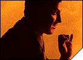

- sounds -
|
30K Lung_Two2 Year Olds Lung Capacity43K May VomitI'm So Exited52K NakdGrlsWatch Naked Girls Dance Around52K NevrTalkNever Talk To People49K NkdGrbgePeople Throw Garbage At Me50K Oh_NoEwwww Noooo. . The No 1 Place For Friends Sounds The No 1 Place For Sounds JOKE OF THE DAY NEW MEGA MOVIE SOUNDS SITE. Be The First To Hear The New Sounds, Join Our Mailing List. 41K BfbumerBummer36K BossOfMeYou're Not The Boss Of Me25K BrstbackCome Out My Back35K BrstrongMy Breasts Are Really Strong37K CookiesPCookies And Porn. |
com holds no liability from any misuse of these files. . THE POCKET INTERNET - Friends Sounds Page -- Back To The Sound Index Page -- FRIENDS "I think this is the beginning of a beautiful friendship. I don't want your opinion about it, but I do want to tell you what it is, but I don't want your advice on it because it's always wrong. These sound files retain their current copyrights which are held by their respective owners.
|  |
also, a primatalogist and her friends speak in tongues, the science quiz of the century, and our latest installment of "Ask Joe" where we send Science Correspondent Joe Palca out to answer your science questions. .org On this, the final edition of Sounds Like Science . a look at how the new language of ones and zeros brought machines to life and made data immortal . also, a primatalogist and her friends speak in tongues, the science quiz of the century, and our latest installment of "Ask Joe" where we send Science Correspondent Joe Palca out to answer your science questions. |
|
I spent the night at a friends house downtown on saturday night. We walked around the town like idiots, quite overdoing ourselves with caffeine and nicotine (gasp. I like waking up downtown and walking out in to the streets, with everyone around and sounds everywhere. I am working on a multimedia project on the band radiohead, using flash and authorware, for a class of mine. These are some preliminary sketches of what it might look like. |
A site I really like: http://www.soundstone.com/scripts/index.cfm?rfd=2230&rfn=1